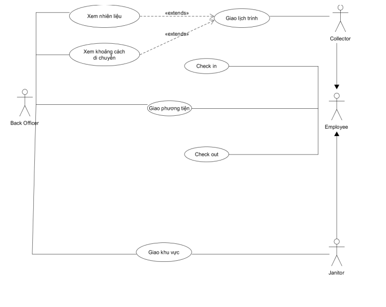
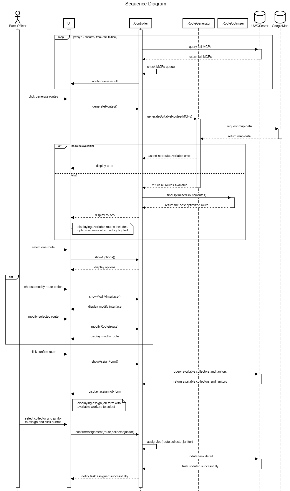

Requirement
- Context, stakeholders and their needs
- Functional, non-functional and general use-case diagram
- Task assignment module's use-case diagram and the use-case using a table format.
Domain context of Urban waste management in Vietnam, relevant stakeholders and their current needs, benefits of UWC 2.0
Context of Urban waste management in Vietnam
Thu gom, xử lý và quản lý rác thải rắn đang là vấn đề bất cập trong quản lý công tác bảo vệ môi trường ở Việt Nam. Sự phát triển về kinh tế và sự gia tăng dân số đang tạo ra nhiều chất thải rắn nói chung và rác thải sinh hoạt nói riêng. Báo cáo của Bộ TN&MT cho biết, thời gian qua, chất thải rắn sinh hoạt (CTRSH) ước tính lượng phát sinh ở các đô thị trên toàn quốc tăng trung bình 10% - 16% mỗi năm. Mặc dù, tỷ lệ thu gom vẫn tăng hàng năm, nhưng do lượng phát sinh lớn, năng lực thu gom còn hạn chế, ý thức cộng đồng chưa cao nên tỷ lệ thu gom, xử lý chất thải, đặc biệt là CTRSH tại nhiều địa phương còn thấp. Phần lớn tổng lượng chất thải được xử lý bằng phương pháp chôn lấp (chiếm 71%) nhưng chỉ có 20% là bãi chôn lấp hợp vệ sinh. 16% được xử lý tại các nhà máy chế biến compost; 13% được xử lý bằng phương pháp đốt. Chất thải rắn công nghiệp đã được thu gom, tái chế. Tuy nhiên các hoạt động này mang tính tự phát, quy mô nhỏ. Việc xử lý CTR làm phân compost vẫn chưa được phổ biến rộng rãi; chưa có mô hình xử lý, tái chế CTR sinh hoạt hoàn thiện đạt được cả các tiêu chí về kỹ thuật, kinh tế, xã hội và môi trường; chất lượng phân sản xuất ra chưa cao; khó tìm được thị trường tiêu thụ, một số còn gây ô nhiễm môi trường. Thực trạng thu gom: Tỷ lệ thu gom rác thải sinh hoạt (RTSH) đô thị trung bình cả nước đạt khoảng 92%. Như vậy, còn 8% khối lượng RTSH không được thu gom và bị thải bỏ vào môi trường xung quanh.
Vấn đề quản lý chất thải rắn ở các đô thị còn nhiều bất cập. Tiêu biểu như ở Thành phố Hồ Chí Minh: hiện trung bình mỗi ngày thành phố tiếp nhận 9.000-11.000 tấn rác thải. Trong đó, có đến 60% lượng rác được thu gom bởi lực lượng rác dân lập, số còn lại do công ty công ích tại các quận, huyện thu gom. Thế nhưng, tình trạng trang thiết bị cũng như hình thức quản lý của lực lượng thu gom rác dân lập hiện nay đang trở nên lạc hậu. Một số lượng lớn phương tiện thu gom không có vách ngăn để chia các loại rác, khiến việc phân loại rác để xử lý chưa đạt hiệu quả mong muốn. Ngoài ra, hiện trên địa bàn thành phố còn 132 đơn vị thu gom rác dân lập chưa chuyển đổi lên mô hình hợp tác xã hoặc doanh nghiệp có tư cách pháp nhân, gây khó khăn cho công tác quản lý. Nguyên nhân là do chưa có quy chuẩn hoạt động cho các mô hình thu gom rác dân lập nên mỗi tổ chức, cá nhân hoạt động mỗi kiểu khác nhau, dẫn đến chất lượng công việc không đồng đều. Ngoài ra, thủ tục pháp lý về đất đai (điều chỉnh kế hoạch sử dụng đất) và khó khăn trong xác định vị trí các trạm trung chuyển cũng là nguyên nhân khiến công tác thực hiện các quy hoạch về quản lý chất thải rắn sinh hoạt triển khai còn chậm. Công tác triển khai chuyển đổi phương tiện thu gom chất thải rắn sinh hoạt cũng từ phương tiện thô sơ, tự chế, lạc hậu sang phương tiện cơ giới cỡ nhỏ, đủ điều kiện tiếp nhận rác đã phân loại cũng còn nhiều bất cập. Ý thức của người dân TP Hồ Chí Minh về bảo vệ môi trường nói chung chưa được nâng cao, đặc biệt là việc xả rác đúng nơi quy định vẫn chưa được tuân thủ dẫn đến tình trạng rác thải tràn lan trên đường phố, vỉa hè và các công trường xây dựng. Bên cạnh đó, tỷ lệ hộ gia đình thực hiện phân loại rác tại nguồn còn khá thấp (khoảng 10 – 20%) và con số này chưa được duy trì ổn định. Hiện nay có ba loại rác chính: rác hữu cơ (rác thực phẩm), rác vô cơ (rác tái chế) và các loại rác khác. Hiện nay tỷ lệ phân loại rác còn rất nhỏ do ý thức của người dân dẫn đến việc thu gom rác của các nhân viên lao công khó khăn hơn.
Relevant stakeholders
- Tổ chức X
- Nhà cung cấp dịch vụ Y
- Nhân viên hỗ trợ (black officers)
- Người lao công (janitors)
- Người thu gom (collectors)
Their current needs
-
Tổ chức X: Tạo ra một phần mềm quản lý giúp việc thu gom rác thải trở nên dễ dàng.
-
Nhà cung cấp dịch vụ Y: Nhận được phần mềm quản lý rác thải mới từ tổ chức X để cải tiến công nghệ thu gom rác thải UWC 1.0 đã có.
-
Back officers:
- Quản lý thông tin và lịch làm việc của janitors và collectors.
- Quản lý thông tin và chi tiết kỹ thuật (tải trọng, sức chứa, mức tiêu thụ nhiên liệu…) của các phương tiện vận chuyển.
- Quản lý thông tin và sức chứa khả dụng của các địa điểm tập kết rác (MCPs)
- Phân giao phương tiện vận chuyển cho janitors và collectors.
- Phân bổ janitors và collectors cho công việc ở mỗi MCP.
- Lập và tối ưu hóa lộ trình cho các collectors.
- Có thể liên hệ bằng tin nhắn tới janitors và collectors.
-
Janitors và collectors: − Xem được lịch làm việc của bản thân. − Xem được chi tiết công việc theo ngày và tuần của bản thân. − Có thể liên hệ bằng tin nhắn với back officers và collectors, janitors khác. − Check in/Check out công việc mỗi ngày. − Nhận thông báo khi MCP đã đầy
Benefits UWC 2.0 will be for each stakeholder?
- Tổ chức X: Kiếm được tiền công khi bán cho tổ chức Y, nếu UWC 2.0 hoạt động tốt thì có thể bán cho các công ty khác từ đó có thể kiếm tiền nhanh chóng. Với việc triển khai một hệ thống lớn, giúp tổ chức có thêm kinh nghiệm cho các nhân viên phát triển phần mềm để nâng cao chất lượng sản phẩm, kinh nghiệm làm việc, tránh những lỗi sai thường gặp cũng như năng suất lao động tăng lên. Nếu UWC 2.0 được triển khai tốt cũng giúp cho tổ chức X được nhiều công ty biết đến hơn, giúp mở rộng thị trường cho tổ chức X.
- Nhà cung cấp dịch vụ Y: Nếu UWC 2.0 được triển khai tốt hơn, có khả năng thay thế công nghệ cũ thì sẽ giúp tiết kiệm chi phí như: chi phí nhiên liệu của các phương tiện, lựa chọn các phương tiện phù hợp để tránh lãng phí; tiết kiệm tiền công do có thể giảm số lượng nhân công do việc cải tiến quãng đường đi lại và có lịch làm việc chi tiết trong ngày giúp cho các nhân viên thu gom và người lao công làm việc năng suất và hiệu quả hơn.
- Nhân viên hỗ trợ: Có được bản đồ chi tiết về các điểm tập trung rác và số lượng người thu gom và người lao công ở từng khu vực cụ thể, đánh giá tình trạng khu vực đó (điểm nào tập trung nhiều rác, điểm nào ít rác để chia số lượng nhân công phù hợp) giúp việc phân chia công việc đều hơn, tránh tình trạng chỗ thừa, chỗ thì thiếu người. Việc có bản đồ phân tích và thống kê từng điểm thug om sẽ dễ dàng hơn so với hệ thống cũ: chỉ có danh sách và thông tin từng nhân viên trên 1 hàng nên việc phân chia sẽ khó khăn hơn. Có lịch làm việc của từng nhân công giúp cho việc phân chia công việc dễ dàng hơn, tránh được tình trạng người làm ít, người làm nhiều kết hợp với bản đồ về tình trạng của những điểm tập trung rác để phân chia công việc công bằng, hiệu quả (ví dụ ở những điểm tập trung nhiều rác thải hơn những điểm khác do các điểm tập trung rác được cập nhật tình trạng liên tục mà trong thời gian đó có theo kế hoạch thì những người ở những điểm có ít rác sẽ được phân bố qua những khu vực nhiều rác). Có được cái nhìn tổng quan về các loại phương tiện kết hợp với bản đồ địa hình các khu vực để chọn phương tiện phù hợp cho các nhân viên thu gom rác (ví dụ ở đường lớn thì dùng xe tải lớn), ở những con phố có đường nhỏ thì có thể dùng xe máy,…). Tạo lộ trình cho từng người thu gom và lao công dựa trên đề xuất của hệ thống UWC 2.0 (dựa trên những đánh giá về quãng đường đi đối với người lao công, hoặc dựa trên đánh giá về tuyến đường ngắn và tiết kiệm nguyên liệu nhất cho người thu gom từ đó tạo lịch trình chi tiết cho họ).
- Đối với người thu gom và người lao công: với việc có lịch làm việc chi tiết, cụ thể giúp họ hoàn thành công việc thuận lợi hơn, tránh phát sinh những yêu cầu đột xuất như đổi địa điểm gây khó khăn cho họ. Với việc có thể xem trước lịch làm việc trong thời gian dài (cả ngày và tuần, tháng) sẽ giúp họ sắp xếp công việc dễ dàng hơn (như việc đưa đón con đi học, hay lên kế hoạch đi chơi vào những ngày nghỉ, …). Với việc giao tiếp với những nhân viên khác giúp cho họ cập nhật được tình hình từng khu vực dễ dàng hơn, có thể hỗ trợ nhau khi cần thiết cũng như nếu xảy ra những sự việc khẩn cấp (hỏng phương tiện đi lại, tai nạn) để có thể nhờ sự giúp đỡ của những thành viên khác. Có thể kiểm tra công việc liên tục khi mở app giúp họ không bị quên công việc cần làm.
Functional, non-functional and general use-case diagram
Functional Requirements
- Back Officers:
- Quản lý thông tin và lịch làm việc của janitors và collectors.
- Quản lý thông tin và chi tiết kỹ thuật (tải trọng, sức chứa, mức tiêu thụ nhiên liệu…) của các phương tiện vận chuyển.
- Quản lý thông tin và sức chứa khả dụng của các địa điểm tập kết rác (MCPs)
- Phân giao phương tiện vận chuyển cho janitors và collectors.
- Phân bổ janitors và collectors cho công việc ở mỗi MCP.
- Lập và tối ưu hóa lộ trình cho các collectors.
- Có thể liên hệ bằng tin nhắn tới janitors và collectors.
- Collector & Janitor:
- Xem được lịch làm việc của bản thân.
- Xem được chi tiết công việc theo ngày và tuần của bản thân.
- Có thể liên hệ bằng tin nhắn với back officers và collectors, janitors khác.
- Check in/Check out công việc mỗi ngày.
- Nhận thông báo khi MCP đã đầy
Non-functional Requirements
- Hiệu suất:
- Lộ trình thu gom rác phải tối ưu về lượng nhiên liệu tiêu thụ và khoảng cách di chuyển.
- Với 1 người dùng tại 1 thời điểm: o Các tin nhắn trong thời gian thực phải được gửi với độ trễ nhỏ hơn 1s. o Các thao tác trên hệ thống được xử lý với độ trễ nhỏ hơn 1s.
- Sức chứa khả dụng của MCPs phải được cập nhật mỗi 15 phút trong tối thiểu 95% thời gian vận hành của chúng.
- Hệ thống có thể xử lí với 1000 MCPs trong thời gian thực ở thời điểm hiện tại và dự kiến với 10.000 MCPs trong 5 năm tới.
- Giao diện:
- Hệ thống UWC 2.0 có thể tái sử dụng dữ liệu có sẵn từ UWC 1.0.
- Task Management của UWC 2.0 có khả năng tương tác với UWC 1.0 nhiều nhất có thể.
- Ngôn ngữ giao diện: tiếng Việt, có thể phát triển thêm tiếng Anh trong tương lai.
- Chi tiết công việc của collectors và janitors phải có hai chế độ hiển thị, theo ngày và theo tuần. Ở mỗi chế độ hiển thị, các thông tin quan trọng cần được trình bày trên một trang mà không phải kéo xuống.
Use-case diagram

Task assignment module's use-case diagram and the use-case using a table format
Use-case diagram

Use-case using a table format
| Key | Value |
|---|---|
| Use-case ID | U1 |
| Use-case name | Giao lịch trình |
| Use-case overview | Giao lịch trình phù hợp cho Collector |
| Actor(s) | Back Officer |
| Preconditions | Biết được tình trạng của MCP, nhiên liệu và khoảng cách cần di chuyển |
| Steps | 1. Xem lịch của Collector và Janitor 2. Xem tình trạng phương tiện ( trọng tải, nhiên liệu). 3. Xem thông tin về MCP 4. Gửi lịch trình phù hợp cho Collector |
| Post Conditions | Collector nhận được lịch trình và thực hiện. |
| Exception Flow | Thông tin về MCP được cập nhật mỗi 15 phút, nếu sức chứa của MCP vượt quá 95%, Back Officer sẽ cập nhật lịch trình phù hợp và gửi cho Collector |
| Key | Value |
|---|---|
| Use-case ID | U2 |
| Use-case name | Giao khu vực |
| Use-case overview | Giao khu vực cho Collector |
| Actor(s) | Back Officer |
| Preconditions | Biết được tình trạng của khu vực cần thu gom và khoảng cách cần di chuyển. |
| Steps | 1. Xem lịch của Collector và Janitor 2. Xem thông tin về khu vực cần thu gom. 3. Gửi địa chỉ khu vực cần thu gom cho Janitor |
| Post Conditions | Janitor nhận được đia chỉ và tiến hành thu gom tại khu vực. |
| Exception Flow | Không |
System modeling
- Activity diagram
- Sequence diagram for "a back officer to assign vehicles to janitors and collectors" process
- Class diagram of Task Assignment module
- MVP 1: Task Management for back-officer
Activity diagram

- Describe: Có 2 điểm bắt đầu riêng biệt là 2 loại stackholder: back officer và (janitor, collector).
- Các hoạt động thêm, xóa, chỉnh sửa nhiệm vụ được tiến hành riêng biệt với nhau.
- Ở bên backofficer: đầu tiên là đăng nhập rồi gửi thông tin đến hệ thống. Hệ thống sẽ phải kiểm tra xem UWC đã đầy hay không. Nếu đầy thì xuất thông báo và có thể chọn đăng xuất để kết thúc. Nếu chưa thì sẽ hiện thị lịch làm việc theo từng điểm thu gom rác. Nhân viên sẽ có các lựa chọn thêm, xóa, chỉnh sửa các nhiệm vụ. Dữ liệu sẽ được cập nhật vào hệ thống sau mỗi lần thay đổi.
- Ở phía janitor và collector có thể xem nhiệm vụ và khi hoàn thành nhiệm vụ sẽ xóa và cập nhật vào hệ thống.
Refs: here
Sequence diagram

- Describe: Back Officers (BO) khi cần một lộ trình để Collector thu thập rác từ các MCPs, lộ trình hoạt động sẽ như sau: − Mỗi ngày, từ 7 giờ sáng tới 8 giờ tối, mỗi 15 phút, Controller sẽ gửi một yêu cầu kiểm tra số MCPs đã đầy tới UWC Server. Nếu hàng đợi MCPs queue đã đầy thì Controller sẽ gửi thông báo tới UI để nhắc nhở BO tạo lộ trình. − Trên giao diện người dùng của UWC 2.0, khi nhận được thông báo MCPs queue đã đầy, BO nhấn nút tạo lộ trình, một yêu cầu tạo lộ trình được gửi tới Controller. Controller sẽ gọi hàm generateSuitableRoutes() của class RouteGenerator để khởi tạo các tuyến đường hợp lý. − Hàm này sẽ truy cập dữ liệu của Google Map để xử lý việc khởi tạo các tuyến đường. Nếu không có tuyến đường nào thỏa mãn được trả về, khi đó controller sẽ gửi thông báo lỗi ra màn hình. − Ngược lại nếu các tuyến đường khả thi được trả về, Controller sẽ gọi hàm findOptimizedRoute() của class RouteOptimizer để tìm tuyến đường tối ưu nhất. Tuyến đường tối ưu nhất được trả về Controller. Sau đó Controller sẽ gửi danh sách các tuyến đường khả dĩ lên UI trong đó bao gồm cả tuyến đường tối ưu nhất được hiển thị nổi bật hơn các tuyến đường còn lại. − Sau khi có danh sách các tuyến đường, BO sẽ lựa chọn một tuyến đường được hiển thị trên UI. Có được tuyến đường, Controller sẽ cho hiển thị các lựa chọn như chỉnh sửa hoặc xác nhận tuyến đường − Nếu BO lựa chọn sửa đổi tuyến đường, UI sẽ gửi một yêu cầu tới Controller và Controller sẽ trả về giao diện các lựa chọn chỉnh sửa tuyến đường trên UI. Sau khi BO thực hiện các chỉnh sửa tuyến đường trên UI, UI sẽ gọi hàm modifyRoute() của Controller để cập nhật tuyến đường đã sửa đổi, Controller sẽ gửi thông tin cho UI để hiển thị tuyến đường đã sửa. − Sau đó BO sẽ lựa chọn xác nhận hoàn thành lựa chọn tuyến đường, một yêu cầu tìm kiếm những nhân viên phù hợp cho công việc của tuyến đường trên sẽ được UI gửi tới Controller. Controller sẽ truy xuất những dữ liệu này từ UWC Server. Controller sau khi nhận được dữ liệu sẽ hiển thị form lựa chọn phân công nhân viên lên UI. − Khi đó, BO sẽ lựa chọn nhân viên để phân công tuyến đường trên và nhấn nút Submit. UI sẽ gửi yêu cầu xác nhận việc phân công đến Controller, Controller gọi hàm assignJob để liên kết các tuyến đường và collector và janitor được phân công tương ứng. Sau đó, Controller sẽ gửi yêu cầu cập nhật dữ liệu công việc lên UWC Server. − Khi UWC Server hoàn thành cập nhật dữ liệu, Controller sẽ gửi thông báo đến UI rằng công việc đã được giao thành công
Refs: here
Class diagram of Task Assignment module
 − UI: Hiển thị các thao tác của Back-officer khi giao việc
− Controller: Chức các phương thức giao việc và quản lý dữ liệu
− UI: Hiển thị các thao tác của Back-officer khi giao việc
− Controller: Chức các phương thức giao việc và quản lý dữ liệu
Task Management for back-officer
Please follow Figma UI design
Architectural Design
Layered architecture

Presentation strategy
Hệ thống UWC 2.0 tập trung vào việc cung cấp trải nghiệm liền mạch và thân thiện với người dùng bằng cách sử dụng giao diện thân thiện, hấp dẫn, trực quan và dễ điều hướng. Thiết kế giao diện người dùng được tối ưu hóa để hoạt động trên các thiết bị và kích thước màn hình khác nhau, đảm bảo rằng người dùng có thể truy cập hệ thống từ mọi nơi và mọi lúc.
Thông báo và cập nhật theo thời gian thực là một phần không thể thiếu trong chiến lược này, đảm bảo rằng người dùng luôn được thông báo về nhiệm vụ được giao, thay đổi thời gian biểu và cảnh báo quá tải MCP. Các cập nhật và thông báo này được thiết kế để cung cấp thông tin và có thể thực hiện được, cho phép người dùng nhanh chóng thực hiện các hành động thích hợp để giải quyết mọi vấn đề có thể phát sinh.
Các tùy chọn tùy chỉnh là một khía cạnh quan trọng khác của chiến lược. Hệ thống cho phép người dùng chọn ngôn ngữ, múi giờ và cài đặt thông báo ưa thích của họ, cho phép họ cá nhân hóa trải nghiệm và cải thiện năng suất của mình.
Data storage approach
UWC có thể sử dụng giải pháp lưu trữ dữ liệu mạnh mẽ và có thể mở rộng, chẳng hạn như cơ sở dữ liệu dựa trên đám mây (MongoDB Cloud, Superbase, hoặc self-hosted) hoặc “distributed system". Các cách tiếp cận này phải có khả năng xử lý khối lượng dữ liệu lớn, hỗ trợ thông lượng cao và độ trễ thấp.
Dữ liệu phải được lưu trữ ở định dạng có cấu trúc và được chuẩn hóa (normalized format), để dễ dàng truy vấn và phân tích hiệu quả. Ngoài ra, UWC triển khai các cơ chế sao lưu và phục hồi thích hợp để đảm bảo tính khả dụng (availability) và độ bền (durability) của dữ liệu trong trường hợp xảy ra sự cố. Bằng cách áp dụng phương pháp lưu trữ dữ liệu được lên kế hoạch tốt, UWC có thể đảm bảo rằng dữ liệu an toàn, bảo mật và sẵn sàng để xử lý và phân tích.
API management
Hệ thống sử dụng một cổng API an toàn cho phép người dùng truy cập vào các tài nguyên và API của hệ thống. Các API phải được triển khai đi kèm với các cơ chế xác thực và ủy quyền, chẳng hạn như OAuth 2.0 (NextAuth của NextJS) hoặc JSON Web Tokens (JWT), để kiểm soát quyền truy cập vào API và bảo vệ dữ liệu nhạy cảm.
Hệ thống có thể sẽ cung cấp tài liệu API toàn diện và các công cụ kiểm tra để cho phép những lập trình viên khác dễ dàng tích hợp với hệ thống (swagger, documentation, …). Hệ thống UWC 2.0 có thể tạo điều kiện tích hợp bên thứ ba và tăng khả năng sử dụng và áp dụng tổng thể của nó.
Refs: Diagram source
Component diagram
Component diagram description
Component Back Officer View có 2 method: InforManagement View và Task Management View. • InfoManagement View có interface cho phép Back Officer tìm kiếm thông tin của các MCPs, Janitor, Collector và chỉnh sửa thông tin của bản thân. Những yêu cầu này được gửi tới Component InfoController để component này tiếp cận và chỉnh sửa những thông tin ở cơ sở dữ liệu thông qua Component Resources. • TaskManagement View có interface cho phép Back Officer chọn, chỉnh sửa tuyến đường làm việc của Collector và phân công Janitors và Collectors vào các ngày phù hợp. Những chỉnh sửa và thay đổi này sẽ được gửi tới component TaskController để component này tiếp cận và chỉnh sửa những thông tin ở cơ sở dữ liệu thông qua lần lượt 3 component: ◦ Component Resources chỉnh sửa dữ liệu của các nhân viên và phương tiện. ◦ Component MCP chỉnh sửa dữ liệu của các MCP. ◦ Component Task chỉnh sửa thông tin các Task cần làm của nhân viên.
Riêng đối với các thao tác với tuyến đường mà Back Officer thực hiện, component TaskController có một sub component là RoutePlanning Module nhận input từ Back Officer và trả về Back Officer interface mà không thông qua các component tại Model.
Component Employee View có 2 method: Today TaskDetailView và TaskScheduleCalendarView.
• Today TaskDetailView và TaskScheduleCalendarView có interface lần lượt có các chức năng: cho phép nhân viên xem được công việc của bản thân ngày hôm đó và checkin/checkout bằng cách gửi lệnh yêu cầu tới component Task Controller để component này tiếp cận dữ liệu từ cơ sở dữ liệu thông qua component Task và component Worker.
Refs: Diagram source